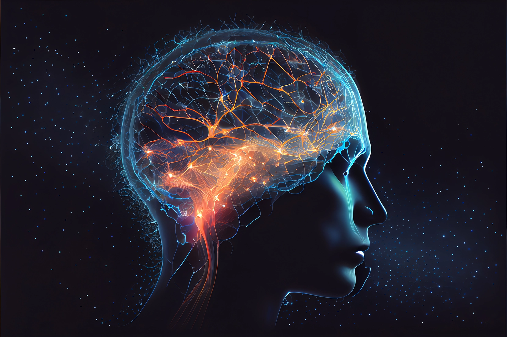
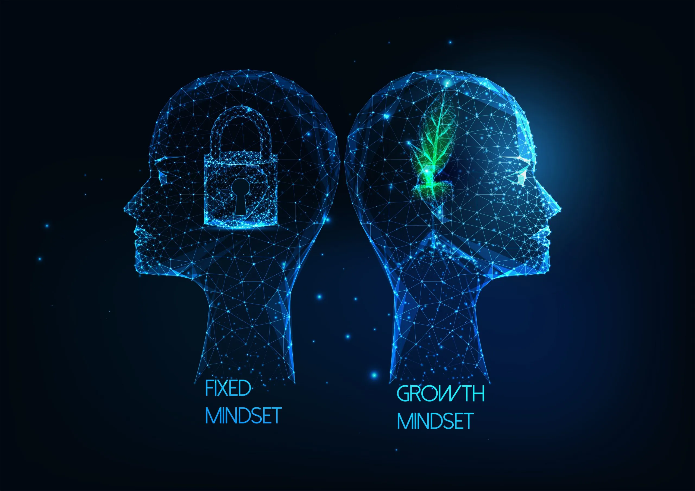

14 April 2025
Neuroplasticity and Growth Mindset
Neuroplasticity
Understanding the principles of neuroplasticity benefits people
Neuroplasticity means our brain has the ability to change, grow, and
learn new things.
According to the Cleveland Clinic, “Neuroplasticity refers to your
brain’s ability to absorb information and evolve to manage new
challenges.”
Our brain can create new pathways when we practice, learn something
new, or face challenges.
It helps people adapt to new environments, recover from injuries, and
develop new skills.

Photo credit: Thebraindocs.com
How you might engage with the principles of neuroplasticity for your benefit
To make our brain stronger, we need to challenge it regularly. This
can be done by learning new skills, trying different things, or
changing our daily routine.
Every new experience helps our brain grow and learn faster.
Ways to increase your neuroplasticity
The Cleveland Clinic suggests that simple changes in daily life can help increase neuroplasticity. These include:
- Listen to new music.
- Get enough sleep.
- Take a different route to work or school.
- Try cooking a new recipe.
- Use your non-dominant hand.
- Learn a new language.
- Start a new hobby.
How our brains evolve and adapt
Growth Mindset
What it is and why it is relevant
According to the article, in a fixed mindset, people believe their
intelligence and skills are unchangeable.
They think they are either good or bad at something, and there’s
nothing they can do to improve.
In a growth mindset, people believe they can develop their talents and
abilities through hard work, practice, and learning.
Carol Dweck explains that, “Students understand that their talents and
abilities can be developed through effort, good teaching and
persistence.”
This idea is very important because it helps people see mistakes as
part of learning.
It encourages them to take on challenges and keep trying, which leads
to success and self-improvement over time.

Photo credit: theneurocoaching.academy
I was surprised to discover that:
One thing that surprised me was learning that praising intelligence
can sometimes have a negative effect. The article says, “Praising
intelligence backfires.
It puts them in a fixed mindset and not want challenges.”
This changed my thinking because I used to believe that telling
someone they are smart is always good.
Now I understand it is better to praise their effort, hard work, and
persistence — because this helps them build a growth mindset and not
be afraid of challenges.
How will you integrate growth mindset into your learning journey?
After learning about growth mindset, I want to use it in my daily learning. I will remind myself that I can improve my skills through practice and effort.
“Students understand that their talents and abilities can be developed through effort, good teaching and persistence.”
For my learning journey, I will:
- Challenge myself to try difficult tasks and not give up easily.
- Focus on the learning process, not just the result.
- Learn from my mistakes and use them to improve.
- Listen to feedback and try different ways of learning if I struggle.
When students believe they can get smarter, they understand that
effort makes them stronger.
This means they are willing to spend more time learning, which helps
them achieve better results.
Blend with my learning plan and strategies
Understanding neuroplasticity reminds me that my brain can always
change, grow, and get better when I challenge myself.
The Cleveland Clinic says, “Neuroplasticity refers to your brain’s
ability to absorb information and evolve to manage new challenges.”
Learning about growth mindset also helps me stay positive when I
study.
Carol Dweck explains that “talents and abilities can be developed
through effort, good teaching and persistence.”
This reminds me that I don’t need to be perfect from the start I can
always improve if I keep learning and practicing.
For my learning journey, I want to:
- Keep working on my study habits and try different ways of learning if something doesn’t work well for me.
- Challenge myself to learn new skills and try new things, even if they are hard.
- Learn from my mistakes and use them to help me get better next time.
These ideas help me stay motivated, keep learning, and believe that I can always improve with practice, time, and effort.
Growth Mindset and SuccessGrowth Mindset and Education